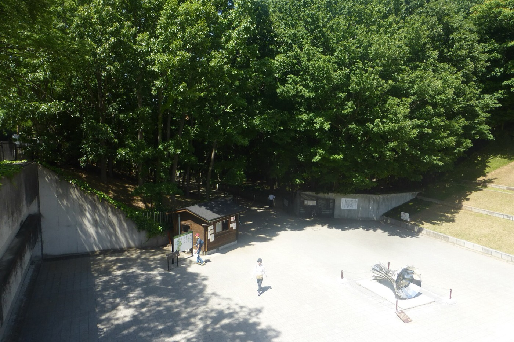

LICENSE宅地建物取引士証(千葉県知事登録)の交付申請には、宅建協会が実施する法定講習会を受講してください。受講にあたっては、事前の申し込みが必要です。講習会当日の申し込みや電話での申し込みはできませんのでご注意ください。なお、各講習会とも定員になり次第、締切となります。
| 支部受付時間 | 月〜金 AM9:00〜PM4:30 |
|---|---|
| 休業日 | 土日祝祭日 他事務局休業日に準ずる |
| 受講方法 | 会場受講 / WEB受講(WEBでも受講できるようになりました) |
取引士とは試験に合格した後「登録」し、さらに「取引士証」を持っている者をいいます。取引士の業務は「重要事項の説明」と「契約書面への記名押印」の2点です。試験の概要・日程は(一財)不動産適正取引推進機構のページをご確認ください。